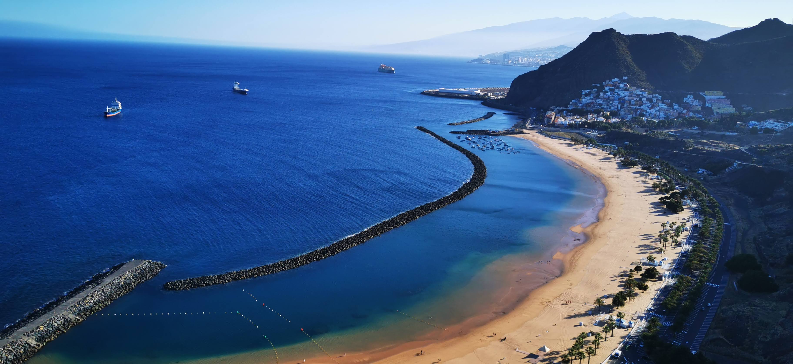
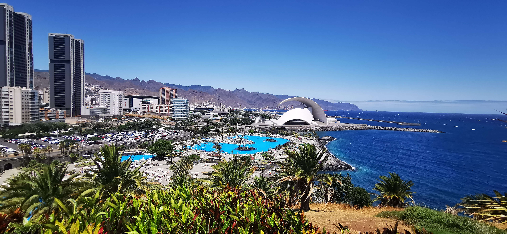
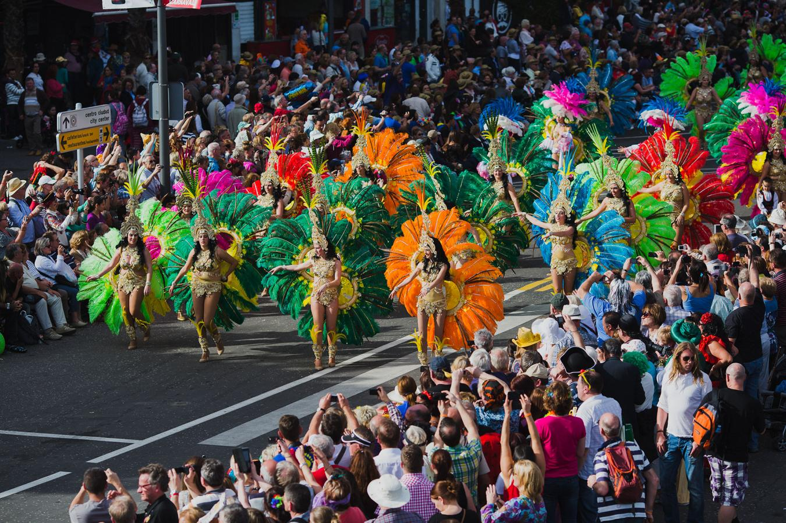

TENERIFE
FRUMUSETEA NATURII
Tenerife, cea mai mare dintre cele șapte insule Canare, este o bijuterie uluitoare, amplasată în
Oceanul Atlantic, chiar în largul coastei Africii de nord-vest. Această insulă vibrantă și diversă
se mândrește cu o moștenire culturală bogată, peisaje naturale magnifice și climă temperată pe tot
parcursul anului, ceea ce o face o destinație căutată pentru călătorii din toate categoriile
sociale.

Unde paradisul se întâlnește cu aventura
Cu munții săi vulcanici uimitori, plajele curate și orașele tradiționale fermecătoare, Tenerife oferă
un amestec unic de relaxare, aventură și imersiune culturală. Fie că sunteți în căutarea unor
activități palpitante în aer liber, cum ar fi drumeții pe vârful Muntelui Teide, explorarea vieții
marine colorate prin scufundări sau pur și simplu să vă relaxați pe nisipurile aurii din Playa de
Las Americas, Tenerife promite o experiență de neuitat.
Gastronomie, festivaluri și nu numai
În plus, gama impresionantă a insulei de restaurante rafinate, piețele pline de viață care oferă
produse și meșteșuguri cultivate local, precum și muzeele și galeriile de artă de talie mondială,
fac din aceasta un adevărat paradis pentru gurmanzi, cumpărători și pasionații de cultură
deopotrivă. Cu localnicii săi caldi și primitori, festivalurile vibrante și o abundență de opțiuni
de cazare, de la stațiuni luxoase la vile confortabile, Tenerife este o destinație care satisface
dorințele fiecărui călător și promite o experiență de vacanță care te va lăsa fermecat și tânjind
mai mult.
Este insula celor o mie de experiențe. Există o mie de lucruri pe care le poți face în orice
perioadă a anului, datorită climei blânde și a gamei enorme de activități oferite pe cea mai mare
dintre Insulele Canare.
Tenerife încă mai păstrează frumoase cartiere istorice de mare valoare artistică, în care vă puteți
plimba relaxat, muzee și sate fermecătoare pline de tradiții locale, unde puteți întâlni localnici
și discuta cu ei.
